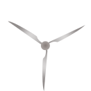

<div class="windmill">



</div>

<style>
	.windmill { height: 300px; position: absolute; top: 18px; right: -1px; width: 131px; }
		.windmill .windmill-base { position: absolute; left: 59px; top: 66px;  }
		.windmill .windmill-blades { position: absolute; left: 0px top: 0px;
			-o-transform: rotate(-40deg);
			-webkit-transform: rotate(-40deg);
			-moz-transform: rotate(-40deg);
			transform: rotate(-40deg);
			-webkit-animation: rotate-blades 40s 4s ease-in-out infinite; }
		@-webkit-keyframes rotate-blades {
			from	{ -webkit-transform:rotate(3200deg); }
			to		{ -webkit-transform:rotate(-40deg); }
		}

</style>
